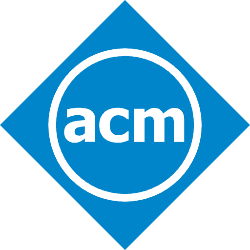
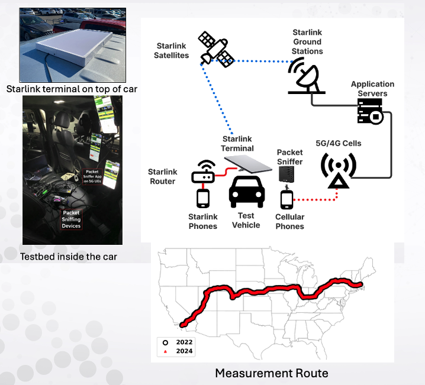
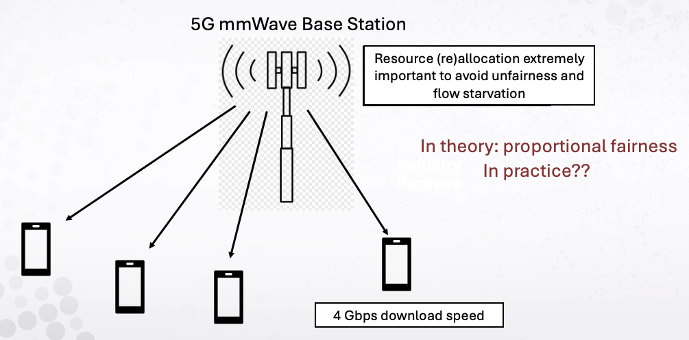
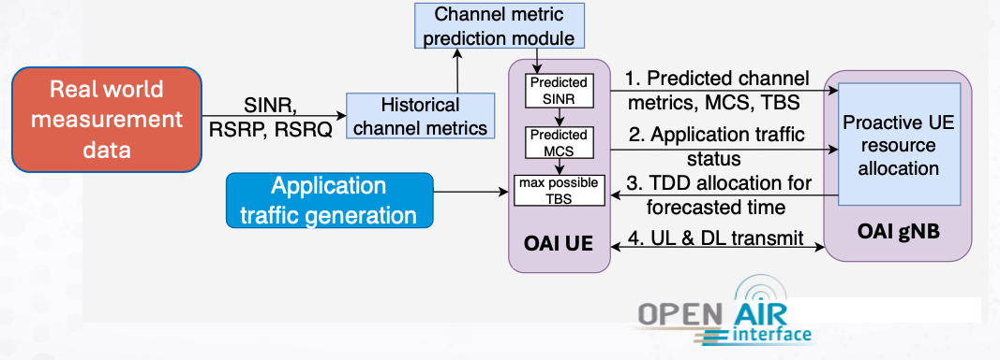

ACM Author ProfileMoinak Ghoshal
Postdoctoral Research Scientist, Columbia University
About Me
I am a Postdoctoral Research Scientist in the Department of Computer Science at Columbia University, working with Prof. Ethan Katz-Bassett, Prof. Kostis Kaffes, and Prof. Henning Schulzrinne. I completed my Ph.D. in the Department of Electrical and Computer Engineering at Northeastern University, advised by Prof. Dimitrios Koutsonikolas, and was a member of the Institute for Intelligent Networked Systems (INSI). Previously, I earned my Bachelor's degree in Information Technology from Maulana Abul Kalam Azad University of Technology (formerly known as West Bengal University of Technology) in India, and spent two years as an R&D Engineer at Keysight Technologies.
Research Overview
My Ph.D. research focused on experimental wireless networking and mobile systems, studying 5G and Beyond-5G (B5G) networks and their impact on high-bandwidth, low-latency applications such as mobile AR/VR, cloud gaming, ultra-HD and panoramic video streaming, and connected autonomous vehicles (CAVs). My research combines large-scale field measurement with systems building to characterize how commercial 5G and Beyond-5G deployments actually behave, and to design mechanisms that let applications adapt to real-world network constraints.
News
Research Highlights
1 Empirical Evaluation and Evolution Study of 5G Networks
Performance of Cellular Networks on the Wheels
ACM IMC 2023 & ACM IMC 2025 (Replication)
A cross-country drive from LA to Boston tracking 5G's evolution between 2022 and 2024. We find substantial gains in coverage and performance, though 2 of 3 operators still cover less than 50% of the route. A head-to-head comparison with Starlink shows near-100% availability and lower RTT than cellular, with comparable downlink throughput – making it a strong alternative in underserved regions.

2 Demystifying Operator Policies in Operational 5G Networks
Demystifying Resource Allocation Policies in Operational 5G mmWave Networks
IEEE/ACM Transactions on Networking (2025)
The first systematic study of resource allocation policies in operational 5G mmWave networks. We find operators rely on simple threshold-based rules rather than proportional fairness, often over-allocating to new low-demand flows or reserving capacity for future use – policies that vary not just across operators but across cities for the same operator.

3 Systems for Next-Gen Wireless Networks
Enabling Emerging Applications in 5G Through UE-Assisted Proactive PHY Frame Configuration
IEEE PIMRC (2024)
Today's 5G networks allocate PHY resources statically and skew downlink-heavy, but many next-gen applications are uplink-oriented with demands that shift over time. We developed an ML-driven framework that proactively reconfigures PHY frames based on real-time channel predictions, addressing the limitations of today's fixed configurations.
